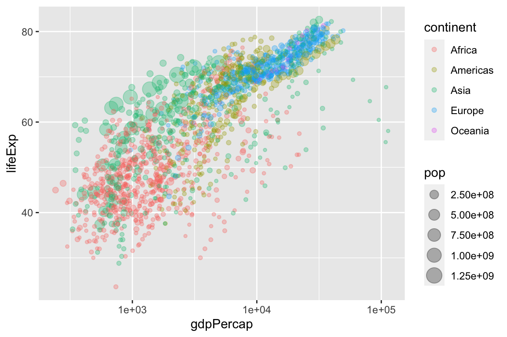
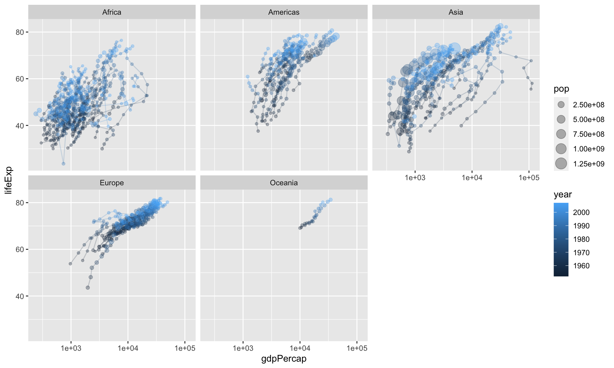

Chapter 8 The Scatterplot
The scatterplot is the most powerful tool in statistics. The following comes as close to any rote procedure that I would recommend following:
Always plot your data using a scatterplot.
For some combinations of unordered, qualitative variables with a large number of categories, the scatterplot might not offer useful information. However, the plot itself will not mislead the researcher. Therefore, the scatterplot offers a safe, likely useful starting point for almost all data analysis.
As an example, here’s Sarah’s data for the research project. She cares about the difference in ideology self-reports across different study designs. Although this isn’t an ideal application for a scatterplot (i.e., two fine-grained measures of x and y), the scatterplot is (1) at least somewhat helpful and (2) certainly not harmful.

8.1 geom_point()
To create scatterplots, we simply use geom_point() as the geometry combined with our same approach to data and aesthetics.
Here’s a simple example with hypothetical data.
# create a hypothetical dataset with tribble()
df <- tribble(
~x, ~ y,
1, 1,
2, 2,
3, 6,
1, 3,
2.5, 5) %>%
glimpse()Rows: 5
Columns: 2
$ x <dbl> 1.0, 2.0, 3.0, 1.0, 2.5
$ y <dbl> 1, 2, 6, 3, 5
Here’s a more realistic example.
Rows: 826
Columns: 2
$ seat_share <dbl> 0.02424242, 0.46060607, 0.51515150, 0.47204968, 0.527…
$ portfolio_share <dbl> 0.09090909, 0.36363637, 0.54545456, 0.45454547, 0.545…
Because the data are so dense, especially in the lower-left corner of the plot, we might use alpha transparency to make the density easier to see.

8.2 Example: gapminder
For a dataset with more variables, we can represent a few other variables using aesthetics other than location in space.
For this example, we use country-level data from the gapminder package.
# load gapminder dataset from gapminder package
data(gapminder, package = "gapminder")
glimpse(gapminder)Rows: 1,704
Columns: 6
$ country <fct> Afghanistan, Afghanistan, Afghanistan, Afghanistan, Afghani…
$ continent <fct> Asia, Asia, Asia, Asia, Asia, Asia, Asia, Asia, Asia, Asia,…
$ year <int> 1952, 1957, 1962, 1967, 1972, 1977, 1982, 1987, 1992, 1997,…
$ lifeExp <dbl> 28.801, 30.332, 31.997, 34.020, 36.088, 38.438, 39.854, 40.…
$ pop <int> 8425333, 9240934, 10267083, 11537966, 13079460, 14880372, 1…
$ gdpPercap <dbl> 779.4453, 820.8530, 853.1007, 836.1971, 739.9811, 786.1134,…ggplot(gapminder, aes(x = gdpPercap,
y = lifeExp,
size = pop,
color = continent)) +
geom_point(alpha = 0.3)
Because GDP per capita is skewed so heavily to the right, we might transform the x-axis from a linear scale (the default) to a log (base-10) scale.
ggplot(gapminder, aes(x = gdpPercap,
y = lifeExp,
size = pop,
color = continent)) +
geom_point(alpha = 0.3) +
scale_x_log10()
Because countries are evolving over time, we can connect the subsequent points using geom_path(). Note that geom_path() connects points as they are arranged in the dataset, so make sure your dataset is arranged properly. Because we want one path per country, we should include the aesthetic aes(group = country) as an argument to geom_path().
# arrange data by year
gapminder2 <- gapminder %>%
arrange(year)
ggplot(gapminder2, aes(x = gdpPercap,
y = lifeExp,
size = pop,
color = continent)) +
geom_point(alpha = 0.3) +
geom_path(aes(group = country)) +
scale_x_log10()
This is a little hard to see, so let’s clean it up a bit.
ggplot(gapminder2, aes(x = gdpPercap,
y = lifeExp,
size = pop,
color = year)) +
geom_path(aes(group = country), size = 0.5, alpha = 0.2) +
geom_point(alpha = 0.3) +
scale_x_log10() +
facet_wrap(vars(continent))
8.3 Example: voteincome
[This block is currently not working because the Zelig package is out of commission at the moment.]
# load voteincome data from Zelig package
# data(voteincome, package = "Zelig")
#
# glimpse(voteincome)
#
# ggplot(voteincome, aes(x = education,
# y = income)) +
# geom_point()Notice three things:
- The variable
educationis not under control. To see the codings, usehelp(voteincome, package = "Zelig"). Ideally, this variable (i) use qualitative labels rather than numeric placeholders and (ii) be a factor with reasonably ordered levels. - There’s substantial over-plotting. Dozens of points are right on top of each other, so we cannot tell how many points are at each coordiate.
Let’s fix the first issue for education, so you can see how. (income has many more levels, so let’s just get on with the plotting).
# voteincome2 <- voteincome %>%
# mutate(education = fct_recode(as.character(education),
# "Less than High School Education" = "1",
# "High School Education" = "2",
# "College Education" = "3",
# "More than a College Education" = "4")) %>%
# glimpse()Now let’s deal with the overplotting. In general, we have two strategies for dealing with overplotting.
- alpha transparency
- jittering
First, let’s try to adjust the alpha transparency.
This helps, but only a little. We can we wher we have many points, where we have just a few, and where we have none. But overall, we still don’t have a good sense of the density at each coordinate.
Let’s try jittering. To jitter the data, we add a small amount of noise to each point. We add enough noise to separate it from the other points, but not so much noise to distort the position along in the space.
Exercise 8.1 Write an R script that uses the parties dataset to create a scatterplot that allows you to evaluate Clark and Golder’s (2006) claim:
The number of political parties increases as social heterogeity increases, but only under permissive electoral rules.
Hint
Perhaps use the following aesthetics:x = eneg and y = enep. Create individual facets for each electoral_system.
Solution
politics_and_need.csv. Plot the variable percent_uninsured (the percent of each state’s population without health insurance) along the horizontal axis and the variable percent_favorable_aca (the percent of each state with a favorable attitude toward Obamacare) along the vertical axis. Interpret and speculate about any pattern. I encourage you to represent other variables with other aesthetics.
Exercise 8.3 Continuing the exercise above, label each point with the state’s two-letter abbreviation. Experiment with the following strategies.
geom_text()instead ofgeom_point()geom_label()instead ofgeom_point()geom_text_repel()in the ggrepel package in addition togeom_point()geom_label_repel()in the ggrepel package in addition togeom_point()
?geom_text()) and the contained examples to understand how to use each geom. The variable state_abbr contains the two-letter abbreviation, so you’ll need to include the aesthetic label = state_abbr in the aes() function.
8.4 Resources
- Tufte. 2001. The Visual Display of Quantitative Information.
- Healy. 2018. Data Visualization: A Practical Introduction. [html]
- Wickham. ggplot2: Elegant Graphics for Data Analysis. [html for in-progress 3rd e.]
- RStudio’s ggplot2 cheat sheet [GitHub]
- The help file for
geom_point()has some examples. - The help file for
geom_path()might be helpful, especially if you have the same country observed for multiple years and want to connect the subsequent points. - The help file for
geom_text()might be helpful, especially if you have only a few observations and your readers know something about some of them.